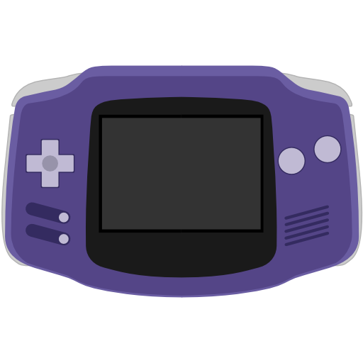

/README.md
I'm Rodrigo Alfonso (@afska), a software developer from Argentina.
I'm interested in 💻 computers, 🤘 music, and 👾 retro gaming.
This page contains some personal projects that I developed in my free time.
You can find me in


 .
.
/software
🎮 /software/video-games ⬆️
MouseWars.io
 (2017~2018)
(2017~2018)
MouseWars.io is a real time multiplayer cursor war game. The cursors have to fight until only one remains.
- Web-based and available online for free
- Two game modes: All vs all and Team vs team
- Two score types: Deathmatch and Survival
- 9 types of attacks
- Up to 8 players per room
- In-game chat
- Available servers for South America and North America
- Local multiplayer through a Desktop version
- No login needed!
Halu
 (2015~2016)
(2015~2016)
An arcade endless-runner game for Android. The only objective is to survive as far as you can, and beat your friends' scores.
Many dangers exist in Halu's world. There are rocks that can hurt any living thing. You can avoid them by jumping or shrinking, but don't shrink too much... you can disappear! Also, your soul will try to escape and you'll have to keep it at your center. The speed increases all the time, and deadly smoke balls will be waiting for you. Be prepared.
👾 /software/gameboy ⬆️
gba-remote-play  (2021)
A software that streams games from a Raspberry Pi to a Game Boy Advance, through its Link Port. Video and audio are compressed and sent in real time to the GBA, while the latter responds with its current input, allowing users to play games of any platform by using the GBA (hence, Remote Play).
- Plays any game using RetroPie on the GBA!
- 120x80 pixels of power!
- ~60fps using the default display mode
- Retro scanlines 😎
- More pixels of power on overclocked GBAs
- Experimental audio support!
Crashes on the GB Micro! (yep, that's a feature)
📰 Read more on Gizmodo, Engadget, Hackaday, Tom's Hardware and The MagPi.
piuGBA (2020)


A Pump It Up emulator for the Game Boy Advance that uses StepMania SSC charts.
- Full .ssc support (including hold and fake notes, bpm/scroll changes, stop/delays, and warps)
- Several game modes (campaign, arcade, impossible)
- Multiplayer support via Link Port (double charts)
- Dynamic speed multipliers
- Multiple mods
- ~70 songs per .gba ROM
▶️ Watch the demo video.
💬 Go to the Discord server to find Download links and user-created content.
gba-link-connection
 (2020)
(2020)

A Game Boy Advance Link Cable library to add multiplayer support to homebrew games.
The library uses message queues to send/receive data and transmits when it's possible. As it uses CPU interrupts, the connection is alive even if a console drops a frame or gets stucked in a long iteration loop. After such event, all nodes end up receiving all the pending messages, so a lockstep communication protocol can be used.
ElDumper
 (2019)
(2019)
A Game Boy cartridge dumper that can read the ROM and read/write battery-backed RAM to manage games and save files.
It's based on insideGadget's GBCartRead, but it adds a new graphical interface packed as an Electron app, so users don't have to download and execute Python scripts in order to dump the memory.
🕹️ /software/nes ⬆️
NesCore
(2022)

A NES Emulator made in JavaScript for educational purposes.
It's main objective is to reflect the NES internals as simply as possible by using clean, object-oriented code. It doesn't have any complex bitwise operations, huge switch-case statements or files with lots of magic numbers.
- 👾 It emulates the NES
- 👨🔧 It plays Super Mario Bros. 3!
- 💻 CPU, 🖥️ PPU, 🔊 APU
- 🐏 SRAM support
- 💾 Save states support
- 🌎 Web frontend using Web Workers and Gamepad API
NEStation
(2019)

A web-based NES emulator frontend which supports two players Net Play through WebRTC.
It's based on jsnes, but a network layer was added in top of it to allow playing over the Internet.
- Fullspeed NES Emulation
- Low-latency -peer to peer- online play
- ROM Drag & Drop / Easy UX
- Swap P1 and P2 at any time
- Configurable controls
- Gamepad support
- CRT TV emulation
🛠️ /software/tools ⬆️
play-and-shift

 (2022)
(2022)
An mplayer wrapper that lets you find and play songs from your terminal with shifted pitch or speed.
csgo-death-trigger
(2022)
A short command line script made in Go that connects via Telnet to a CS:GO instance and triggers HTTP calls when you die.
éste-ganó
(2022)
Steganography toy that encodes secret messages in strings by using zero-width Unicode characters. A Chrome extension allows highlighting the hidden parts.
dropbox-universal-backup-tool
(2015)
A command line tool that synchronizes directories with Dropbox. It uploads the files from disk to the cloud, with the added feature of being able to preview changes before hitting the API.
It only syncs in one direction, so it's safe for pushing incremental backups.
Arduino MIDI Player
(2014)
A MIDI player made of buzzers. It started as a proof of concept for controlling an Arduino board with CoffeeScript.
It seems like Arduino boards can be controlled by any computer using a well known protocol that constantly sends instructions to the board by a serial connection. Fun stuff.
🗑️ /software/archive ⬆️
I started these projects when I was learning programming. They are written in Visual Basic 6, compiled and tested on Windows XP.
MouseWars Classic
(2009)
An online two-player war game, where cursors have to defeat each other by using the assigned attacks.
It works with TCP/IP on Internet or LAN, but a Bot is also available for solo playing.
HackTheSystem
(2004~2007)

It's a... hmm... a "remote administration" tool. It has features like screen controlling and sharing, remote command execution, window management, keylogging, a file manager and a little chat.
El Chat
(2004~2005)

A chat client that we used a lot with my group of friends, inspired by the old MSN Messenger. It was my first contact with socket programming and I had a lot of fun doing it.